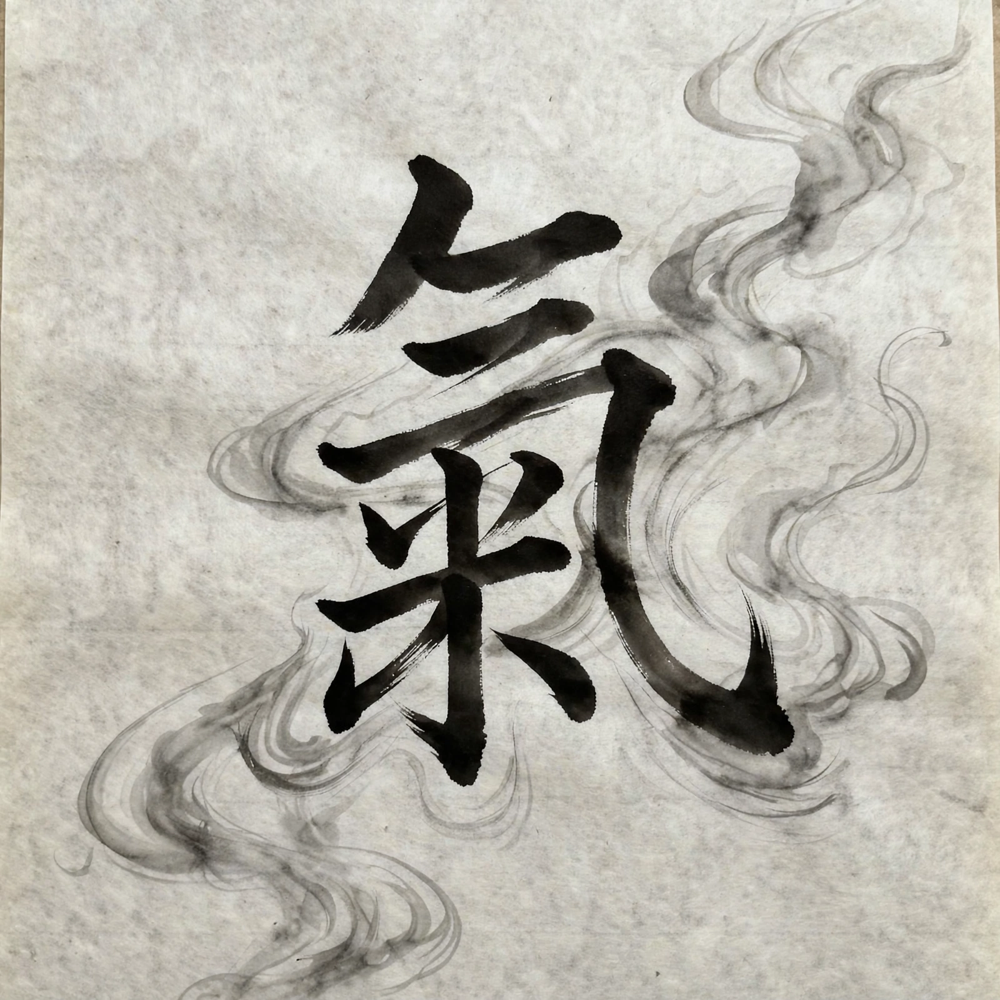

| Chinese | 氣 (traditional) / 气 (simplified) |
|---|---|
| Pinyin | qì |
| Literal meaning | "air", "breath", "vapour" |
| Traditions | Traditional Chinese medicine, Chinese philosophy, martial arts, feng shui |
| Counterpart concepts | Prana (India), ki (Japan), gi (Korea) |
| Scientific status | No empirical evidence as a physical energy; regarded as a philosophical/cultural concept |

Qi (Chinese: 氣, pronounced "chee") is a fundamental concept in Chinese philosophy and traditional Chinese medicine, usually translated as "vital energy", "life force" or "material energy". Qi is held to circulate through all living things — and, in classical cosmology, through the universe itself — and its balanced flow is considered essential to health and harmony.
In traditional Chinese medicine, qi flows through channels called meridians and is classed into types such as yuan qi (original qi), zong qi (gathering qi) and wei qi (defensive qi). Illness is attributed to blockage, deficiency or stagnation of qi, and is treated with acupuncture, herbal medicine, dietary therapy and movement practices such as qigong and tai chi, designed to cultivate and regulate it.
Classical Chinese thinkers, notably Mencius and later Neo-Confucians such as Zhang Zai and Zhu Xi, treated qi as the material substratum of the cosmos, condensing and dispersing to form all things, in complementary pairing with li (principle or pattern). The concept also underlies feng shui, Chinese martial arts (where it informs ideas of internal power), and the Japanese (ki) and Korean (gi) traditions derived from it.
Qi has not been detected as a physical quantity by scientific instruments, and mainstream science treats it as a pre-scientific explanatory framework rather than a measurable energy; clinical research on qi-based therapies yields mixed and contested results.